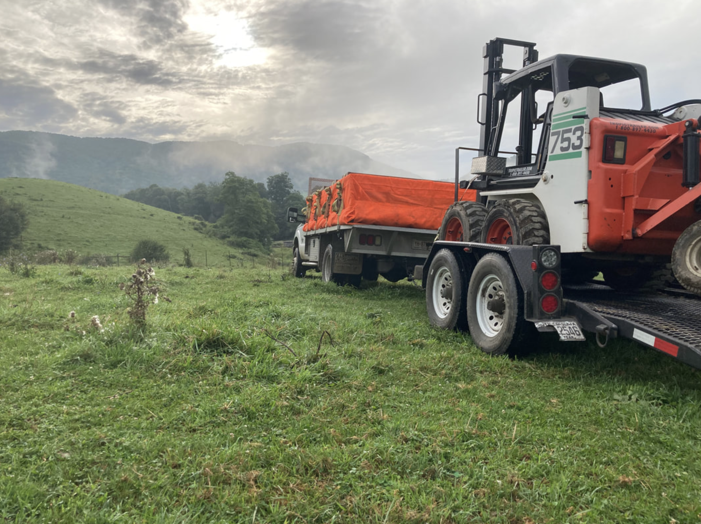

Blue Ridge Apiaries is located in Hudson, NC with our bee hives ranging across the Blue Ridge mountains. Look below to find where you can find our products!

Where to Shop
We are in stores across North Carolina that include: Ingles, Food Lion, Publix, Harris Teeter, The Fresh Market, Mast General Store, Whole Foods, Market Earth Fare, Fred's General Mercantile, NC General Stores, Be Natural Market, Maw's Produce, Stick Boy Bread Co, Food Matters, The Natural Olive, The Lavender House, Hatchett Coffee, High Country Souvenirs, Ashe County Cheese, and Johny Wilson Farm.